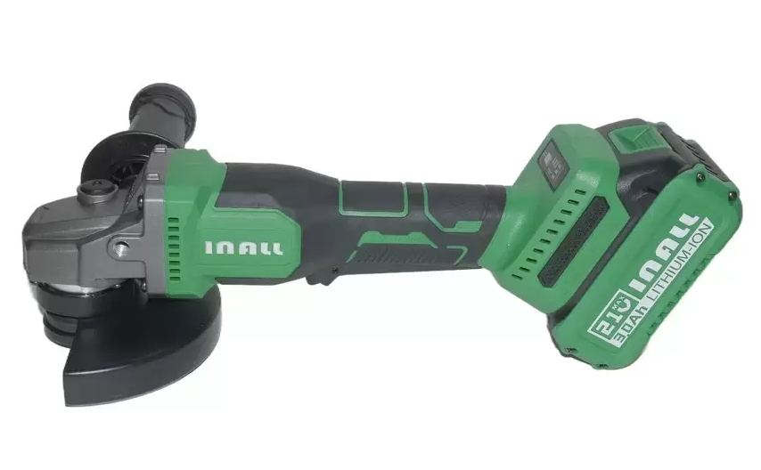
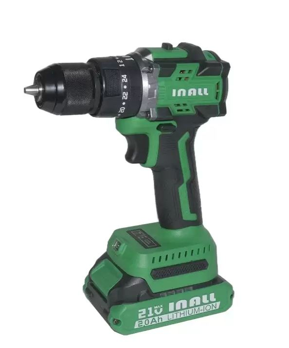

Собственный бренд
INALL
Аккумуляторный бесщеточный инструмент СТМ. Не смешивать с расходниками MIKA/TORRA — это отдельная линейка электроинструмента.

- Дрели-шуруповёрты (разный вольтаж и момент)
- УШМ (болгарка) аккумуляторная
- Винтовёрт и гайковёрт ударные
Уточняйте задачу, Н·м, напряжение и комплектацию (АКБ + ЗУ + кейс). К шуруповёрту апселл — биты MIKA.



Тест для самоконтроля
Мини-тест по INALL. Отметьте ответы и нажмите «Проверить».